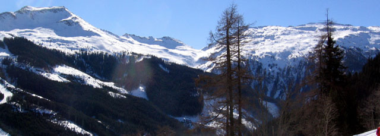
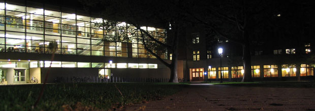
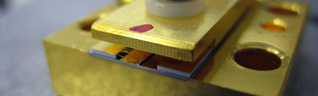
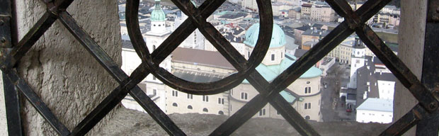
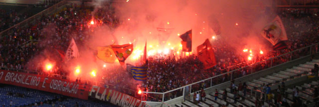
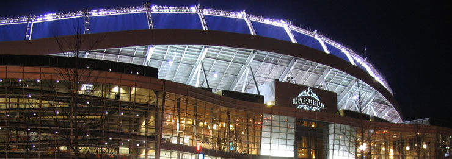
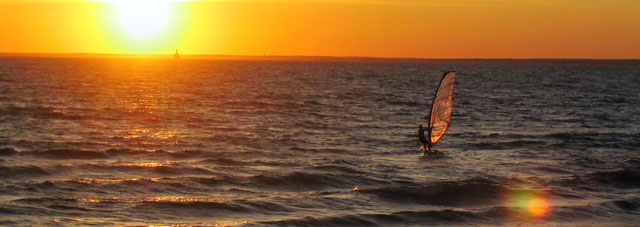

My Website Photos
This is the compilation of photos that appear throughout my website. They load randomly on any individual page, but you can see the whole set here. I've taken most of these photos myself; all of them have a personal connection.
I will frequently upload photos, so check back often.
Clicking on photos will give you a larger version.
{kind=link}
Franz farm, ewes at sunset. June 2005
{kind=link}
Ski slopes of the Gastein Valley in Austria. February 2008
{kind=link}
Princeton University, Friend Center Engineering Library. May 2005
{kind=link}
Quantum Cascade Laser. April 2008
{kind=link}
View from Salzburg Fortress, Austria. February 2008
{kind=link}
Maracanã Stadium, Rio de Janeiro, Brazil
International Conference on the Physics of Semiconductors. July 2008
International Conference on the Physics of Semiconductors. July 2008
{kind=link}
Mile High Stadium, Denver.
December 2003
December 2003
{kind=link}
Cape Code. September 2006
Conference on Intersubband Transitions in Quantum Wells
Conference on Intersubband Transitions in Quantum Wells